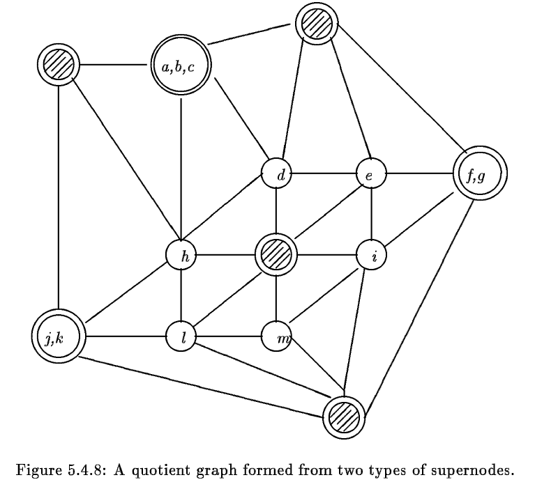
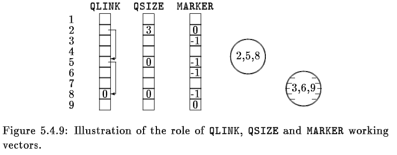
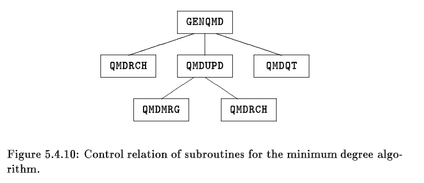

<!DOCTYPE html>


<html lang="zh-CN">


<head>
  <meta name="baidu-site-verification" content="codeva-NSg7ynviLa" />
  <meta charset="utf-8" />
    
  <meta name="viewport" content="width=device-width, initial-scale=1, maximum-scale=1" />
  <title>
    稀疏矩阵算法最小度数算法四之最小度数算法主程序 |  
  </title>
  <meta name="generator" content="hexo-theme-ayer">
  
  <link rel="shortcut icon" href="/images/mojie.jpg" />
  
  
<link rel="stylesheet" href="/dist/main.css">

  <link rel="stylesheet" href="https://cdn.jsdelivr.net/gh/Shen-Yu/cdn/css/remixicon.min.css">
  
<link rel="stylesheet" href="/css/custom.css">

  
  <script src="https://cdn.jsdelivr.net/npm/pace-js@1.0.2/pace.min.js"></script>
  
  

  

<link rel="alternate" href="/atom.xml" title="null" type="application/atom+xml">
</head>

</html>

<body>
  <div id="app">
    
      
    <main class="content on">
      <section class="outer">
  <article
  id="post-稀疏矩阵算法最小度数算法四之最小度数算法主程序"
  class="article article-type-post"
  itemscope
  itemprop="blogPost"
  data-scroll-reveal
>
  <div class="article-inner">
    
    <header class="article-header">
       
<h1 class="article-title sea-center" style="border-left:0" itemprop="name">
  稀疏矩阵算法最小度数算法四之最小度数算法主程序
</h1>
 

    </header>
     
    <div class="article-meta">
      <a href="/posts/e0c9e6c/" class="article-date">
  <time datetime="2022-09-25T08:47:32.000Z" itemprop="datePublished">2022-09-25</time>
</a> 
  <div class="article-category">
    <a class="article-category-link" href="/categories/%E7%90%86%E8%AE%BA%E5%AD%A6%E4%B9%A0/">理论学习</a> / <a class="article-category-link" href="/categories/%E7%90%86%E8%AE%BA%E5%AD%A6%E4%B9%A0/%E7%A8%80%E7%96%8F%E7%9F%A9%E9%98%B5/">稀疏矩阵</a>
  </div>
  
<div class="word_count">
    <span class="post-time">
        <span class="post-meta-item-icon">
            <i class="ri-quill-pen-line"></i>
            <span class="post-meta-item-text"> 字数统计:</span>
            <span class="post-count">3.7k</span>
        </span>
    </span>

    <span class="post-time">
        &nbsp; | &nbsp;
        <span class="post-meta-item-icon">
            <i class="ri-book-open-line"></i>
            <span class="post-meta-item-text"> 阅读时长≈</span>
            <span class="post-count">16 分钟</span>
        </span>
    </span>
</div>
 
    </div>
      
    <div class="tocbot"></div>


  
    <div class="article-entry" itemprop="articleBody">
       
  <link rel="stylesheet" type="text/css" href="https://cdn.jsdelivr.net/hint.css/2.4.1/hint.min.css"><p>本章节介绍 <em>the minimum degree algorithm</em> ，我个人将其翻译为最小度数算法。这里我们看最小度数算法的主程序部分。</p>
<span id="more"></span>
<h1>最小度数算法的实施</h1>
<p>在最小度数算法的实施过程中，不可区分的节点会视为一个 <em>supernode</em> 。注意此时我们有两种不同情况下的 <em>supernode</em>，一个是消元过程中已经消元的连接起来的节点组成的 <em>supernode</em> ，一个是上面提到的不可区分的节点组成的 <em>supernode</em> 。</p>
<p>下图就是对于这两种 <em>supernode</em> 的说明，它是对图 5.4.5 中的图是如何通过两种商图存储的，其中的阴影的双层圆圈表示已经消元的节点组成的<em>supernodes</em> ，而空白的双层圆圈表示不可区分的节点组成的 <em>supernodes</em> 。</p>
<p></p>
<p>我们现在会讨论如何实施这个算法的脚本，其输入为图的结构 <strong>(XADJ, ADJNCY)</strong> 和方程数目 <strong>NEQNS</strong> ，输出为 <strong>PERM</strong> 和 <strong>INVP</strong> 。</p>
<p>这个子程序要求一些临时向量来实施商图模型和不可区分的节点。当前消元图中所有节点的度数存储在数组 <strong>DEG</strong> 中，其中已经被消除的节点的 DEG 值会设为 -1 。</p>
<p>在商图模型中，连通的已经消除的节点会合并为一个 <em>supernode</em> ，此时我们需要挑出一个节点作为 <em>supernode</em> 的代表。如果  就是这样一个连通组分，我们通常会选择  中最后消除的节点作为  的代表，其它节点不再使用。</p>
<p>同样地，对于未消除的不可区分的节点，也会挑出一个节点作为代表，其它节点不再使用。</p>
<p>中间向量 <strong>MARKER</strong> 用于标记在相邻结构中可以忽略的节点，这样的节点的 MARKER 值会设为 -1 ，这个向量也会临时用于生成 <em>reachable sets</em> 。<strong>QSIZE</strong> 和 <strong>QLINK</strong> 数组用于指定不可区分的节点，如果节点  作为代表，那么在这个 <em>supernode</em> 中的节点数目为 <strong>QSIZE(i)</strong> ，这些节点为</p>
<p style=""></p><p>下图说明了 <strong>QSIZE</strong>, <strong>QLINK</strong> 和 <strong>MARKER</strong> 的使用，节点  形成了一个由不可区分的节点组成的 <em>supernode</em> ，其代表为节点 2 。因此节点 5 和 8 的 MARKER 值设置为 -1；节点  形成了一个已经消元的 <em>supernode</em> ，其代表为节点 9 ，因此节点 3 和 6 的 MARKER 值设置为 -1</p>
<p></p>
<p>这里总共有 5 个子程序，分别为 <strong>GENQMD, QMDRCH, QMDQT, QMDUPD, QMDMRG</strong> ，它们的控制关系见下图。</p>
<p></p>
<h1>GENQMD</h1>
<p>(General Quotient Minimum Degree algorithm)，这个子程序的目的是对一个<strong>不连通</strong>的图找到其最小度数排序。其输入为图的结构 <strong>(XADJ, ADJNCY)</strong> 和方程数目 <strong>NEQNS</strong> ，输出为 <strong>PERM</strong> 和 <strong>INVP</strong> 。运算过程中， <strong>(XADJ, ADJNCY)</strong> 会被修改，用于存储商图的结构。</p>
<p>这个子程序一开始会初始化中间数组  <strong>QSIZE</strong>, <strong>QLINK</strong>, <strong>MARKER</strong> 和 <strong>DEG</strong> 向量，之后进行到主循环中。在主循环中，子程序首先会通过 <em>threshold searching</em> 找到一个度数最小的节点，其中有两个变量 <strong>THRESH</strong> 和 <strong>MINDEG</strong>，任何当前的度数等于 <strong>THRESH</strong> 的节点均是度数最小的节点。变量 <strong>MINDEG</strong> 保存大于 <strong>THRESH</strong> 的值的最小的度数，并用于更新 <strong>THRESH</strong> 的值。</p>
<p>当找到了一个最小度数的节点 <strong>NODE</strong> ，之后通过调用子程序 <strong>QMDRCH</strong> 来通过已经消除的节点获得 NODE 的 <em>reachable set</em> 。这个集合会存储在向量 <strong>RCHSET</strong> 中，其大小为 RCHSZE。通过 <strong>QLINK</strong> 获得 NODE 的不可区分的节点，并且进行编号和消除。</p>
<figure class="highlight fortran"><table><tr><td class="gutter"><pre><span class="line">1</span><br><span class="line">2</span><br><span class="line">3</span><br><span class="line">4</span><br><span class="line">5</span><br><span class="line">6</span><br><span class="line">7</span><br><span class="line">8</span><br><span class="line">9</span><br><span class="line">10</span><br><span class="line">11</span><br><span class="line">12</span><br><span class="line">13</span><br><span class="line">14</span><br><span class="line">15</span><br><span class="line">16</span><br><span class="line">17</span><br><span class="line">18</span><br><span class="line">19</span><br><span class="line">20</span><br><span class="line">21</span><br><span class="line">22</span><br><span class="line">23</span><br><span class="line">24</span><br><span class="line">25</span><br><span class="line">26</span><br><span class="line">27</span><br><span class="line">28</span><br><span class="line">29</span><br><span class="line">30</span><br><span class="line">31</span><br><span class="line">32</span><br><span class="line">33</span><br><span class="line">34</span><br><span class="line">35</span><br><span class="line">36</span><br><span class="line">37</span><br><span class="line">38</span><br><span class="line">39</span><br><span class="line">40</span><br><span class="line">41</span><br><span class="line">42</span><br><span class="line">43</span><br><span class="line">44</span><br><span class="line">45</span><br><span class="line">46</span><br><span class="line">47</span><br><span class="line">48</span><br><span class="line">49</span><br><span class="line">50</span><br><span class="line">51</span><br><span class="line">52</span><br><span class="line">53</span><br><span class="line">54</span><br><span class="line">55</span><br><span class="line">56</span><br><span class="line">57</span><br><span class="line">58</span><br><span class="line">59</span><br><span class="line">60</span><br><span class="line">61</span><br><span class="line">62</span><br><span class="line">63</span><br><span class="line">64</span><br><span class="line">65</span><br><span class="line">66</span><br><span class="line">67</span><br><span class="line">68</span><br><span class="line">69</span><br><span class="line">70</span><br><span class="line">71</span><br><span class="line">72</span><br><span class="line">73</span><br><span class="line">74</span><br><span class="line">75</span><br><span class="line">76</span><br><span class="line">77</span><br><span class="line">78</span><br><span class="line">79</span><br><span class="line">80</span><br><span class="line">81</span><br><span class="line">82</span><br><span class="line">83</span><br><span class="line">84</span><br><span class="line">85</span><br><span class="line">86</span><br><span class="line">87</span><br><span class="line">88</span><br><span class="line">89</span><br><span class="line">90</span><br><span class="line">91</span><br><span class="line">92</span><br><span class="line">93</span><br><span class="line">94</span><br><span class="line">95</span><br><span class="line">96</span><br><span class="line">97</span><br><span class="line">98</span><br><span class="line">99</span><br><span class="line">100</span><br><span class="line">101</span><br><span class="line">102</span><br><span class="line">103</span><br><span class="line">104</span><br><span class="line">105</span><br><span class="line">106</span><br><span class="line">107</span><br><span class="line">108</span><br><span class="line">109</span><br><span class="line">110</span><br><span class="line">111</span><br><span class="line">112</span><br><span class="line">113</span><br><span class="line">114</span><br><span class="line">115</span><br><span class="line">116</span><br><span class="line">117</span><br><span class="line">118</span><br><span class="line">119</span><br><span class="line">120</span><br><span class="line">121</span><br><span class="line">122</span><br><span class="line">123</span><br><span class="line">124</span><br><span class="line">125</span><br><span class="line">126</span><br><span class="line">127</span><br><span class="line">128</span><br><span class="line">129</span><br><span class="line">130</span><br><span class="line">131</span><br><span class="line">132</span><br><span class="line">133</span><br><span class="line">134</span><br><span class="line">135</span><br><span class="line">136</span><br><span class="line">137</span><br><span class="line">138</span><br><span class="line">139</span><br><span class="line">140</span><br><span class="line">141</span><br><span class="line">142</span><br><span class="line">143</span><br><span class="line">144</span><br></pre></td><td class="code"><pre><span class="line">C----- <span class="function"><span class="keyword">SUBROUTINE</span></span> GENQMD</span><br><span class="line">C****************************************************************          <span class="number">1.</span></span><br><span class="line">C****************************************************************          <span class="number">2.</span></span><br><span class="line">C**********    GENQMD ..... QUOT <span class="built_in">MIN</span> DEGREE ORDERING    *********          <span class="number">3.</span></span><br><span class="line">C****************************************************************          <span class="number">4.</span></span><br><span class="line">C****************************************************************          <span class="number">5.</span></span><br><span class="line"><span class="comment">C                                                                          6.</span></span><br><span class="line"><span class="comment">C     PURPOSE - THIS ROUTINE IMPLEMENTS THE MINIMUM DEGREE                 7.</span></span><br><span class="line"><span class="comment">C        ALGORITHM.  IT MAKES USE OF THE IMPLICIT REPRESENT-               8.</span></span><br><span class="line"><span class="comment">C        ATION OF THE ELIMINATION GRAPHS BY QUOTIENT GRAPHS,               9.</span></span><br><span class="line"><span class="comment">C        AND THE NOTION OF INDISTINGUISHABLE NODES.                       10.</span></span><br><span class="line"><span class="comment">C        CAUTION - THE ADJACENCY VECTOR ADJNCY WILL BE                    11.</span></span><br><span class="line"><span class="comment">C        DESTROYED.                                                       12.</span></span><br><span class="line"><span class="comment">C                                                                         13.</span></span><br><span class="line"><span class="comment">C     INPUT PARAMETERS -                                                  14.</span></span><br><span class="line"><span class="comment">C        NEQNS - NUMBER OF EQUATIONS.                                     15.</span></span><br><span class="line"><span class="comment">C        (XADJ, ADJNCY) - THE ADJACENCY STRUCTURE.                        16.</span></span><br><span class="line"><span class="comment">C                                                                         17.</span></span><br><span class="line"><span class="comment">C     OUTPUT PARAMETERS -                                                 18.</span></span><br><span class="line"><span class="comment">C        PERM - THE MINIMUM DEGREE ORDERING.                              19.</span></span><br><span class="line"><span class="comment">C        INVP - THE INVERSE OF PERM.                                      20.</span></span><br><span class="line"><span class="comment">C                                                                         21.</span></span><br><span class="line"><span class="comment">C     WORKING PARAMETERS -                                                22.</span></span><br><span class="line"><span class="comment">C        DEG - THE DEGREE VECTOR. DEG(I) IS NEGATIVE MEANS                23.</span></span><br><span class="line"><span class="comment">C               NODE I HAS BEEN NUMBERED.                                 24.</span></span><br><span class="line"><span class="comment">C        MARKER - A MARKER VECTOR, WHERE MARKER(I) IS                     25.</span></span><br><span class="line"><span class="comment">C               NEGATIVE MEANS NODE I HAS BEEN MERGED WITH                26.</span></span><br><span class="line"><span class="comment">C               ANOTHER NODE AND THUS CAN BE IGNORED.                     27.</span></span><br><span class="line"><span class="comment">C        RCHSET - VECTOR USED FOR THE REACHABLE SET.                      28.</span></span><br><span class="line"><span class="comment">C        NBRHD - VECTOR USED FOR THE NEIGHBORHOOD SET.                    29.</span></span><br><span class="line"><span class="comment">C        QSIZE - VECTOR USED TO STORE THE SIZE OF                         30.</span></span><br><span class="line"><span class="comment">C               INDISTINGUISHABLE SUPERNODES.                             31.</span></span><br><span class="line"><span class="comment">C        QLINK - VECTOR TO STORE INDISTINGUISHABLE NODES,                 32.</span></span><br><span class="line"><span class="comment">C               I, QLINK(I), QLINK(QLINK(I)) ... ARE THE                  33.</span></span><br><span class="line"><span class="comment">C               MEMBERS OF THE SUPERNODE REPRESENTED BY I.                34.</span></span><br><span class="line"><span class="comment">C                                                                         35.</span></span><br><span class="line"><span class="comment">C     PROGRAM SUBROUTINES -                                               36.</span></span><br><span class="line"><span class="comment">C        QMDRCH, QMDQT, QMDUPD.                                           37.</span></span><br><span class="line"><span class="comment">C                                                                         38.</span></span><br><span class="line">C****************************************************************         <span class="number">39.</span></span><br><span class="line"><span class="comment">C                                                                         40.</span></span><br><span class="line"><span class="comment">C                                                                         41.</span></span><br><span class="line">      <span class="function"><span class="keyword">SUBROUTINE</span></span>  GENQMD ( NEQNS, XADJ, ADJNCY, PERM, INVP, DEG,          <span class="number">42.</span></span><br><span class="line">     <span class="number">1</span>                     MARKER, RCHSET, NBRHD, QSIZE, QLINK,           <span class="number">43.</span></span><br><span class="line">     <span class="number">1</span>                     NOFSUB )                                       <span class="number">44.</span></span><br><span class="line"><span class="comment">C                                                                         45.</span></span><br><span class="line">C****************************************************************         <span class="number">46.</span></span><br><span class="line"><span class="comment">C                                                                         47.</span></span><br><span class="line">         <span class="keyword">INTEGER</span> ADJNCY(<span class="number">1</span>), PERM(<span class="number">1</span>), INVP(<span class="number">1</span>), DEG(<span class="number">1</span>), MARKER(<span class="number">1</span>),          <span class="number">48.</span></span><br><span class="line">     <span class="number">1</span>           RCHSET(<span class="number">1</span>), NBRHD(<span class="number">1</span>), QSIZE(<span class="number">1</span>), QLINK(<span class="number">1</span>)                  <span class="number">49.</span></span><br><span class="line">         <span class="keyword">INTEGER</span> XADJ(<span class="number">1</span>), INODE, IP, IRCH, J, MINDEG, NDEG,               <span class="number">50.</span></span><br><span class="line">     <span class="number">1</span>           NEQNS, NHDSZE, NODE, NOFSUB, NP, NUM, NUMP1,             <span class="number">51.</span></span><br><span class="line">     <span class="number">1</span>           NXNODE, RCHSZE, SEARCH, THRESH                           <span class="number">52.</span></span><br><span class="line"><span class="comment">C                                                                         53.</span></span><br><span class="line">C****************************************************************         <span class="number">54.</span></span><br><span class="line"><span class="comment">C                                                                         55.</span></span><br><span class="line"><span class="comment">C        -----------------------------------------------------            56.</span></span><br><span class="line"><span class="comment">C        INITIALIZE DEGREE VECTOR AND OTHER WORKING VARIABLES.            57.</span></span><br><span class="line"><span class="comment">C        -----------------------------------------------------            58.</span></span><br><span class="line">         MINDEG = NEQNS                                                   <span class="number">59.</span></span><br><span class="line">         NOFSUB = <span class="number">0</span>                                                       <span class="number">60.</span></span><br><span class="line">         <span class="keyword">DO</span> <span class="number">100</span> NODE = <span class="number">1</span>, NEQNS                                           <span class="number">61.</span></span><br><span class="line">            PERM(NODE) = NODE                                             <span class="number">62.</span></span><br><span class="line">            INVP(NODE) = NODE                                             <span class="number">63.</span></span><br><span class="line">            MARKER(NODE) = <span class="number">0</span>                                              <span class="number">64.</span></span><br><span class="line">            QSIZE(NODE)  = <span class="number">1</span>                                              <span class="number">65.</span></span><br><span class="line">            QLINK(NODE)  = <span class="number">0</span>                                              <span class="number">66.</span></span><br><span class="line">            NDEG = XADJ(NODE+<span class="number">1</span>) - XADJ(NODE)                              <span class="number">67.</span></span><br><span class="line">            DEG(NODE) = NDEG                                              <span class="number">68.</span></span><br><span class="line">            <span class="keyword">IF</span> ( NDEG .LT. MINDEG )  MINDEG = NDEG                        <span class="number">69.</span></span><br><span class="line">  <span class="number">100</span>    <span class="keyword">CONTINUE</span>                                                         <span class="number">70.</span></span><br><span class="line">         NUM = <span class="number">0</span>                                                          <span class="number">71.</span></span><br><span class="line"><span class="comment">C        -----------------------------------------------------            72.</span></span><br><span class="line"><span class="comment">C        PERFORM THRESHOLD SEARCH TO GET A NODE OF MIN DEGREE.            73.</span></span><br><span class="line"><span class="comment">C        VARIABLE SEARCH POINTS TO WHERE SEARCH SHOULD START.             74.</span></span><br><span class="line"><span class="comment">C        -----------------------------------------------------            75.</span></span><br><span class="line">  <span class="number">200</span>    SEARCH = <span class="number">1</span>                                                       <span class="number">76.</span></span><br><span class="line">            THRESH = MINDEG                                               <span class="number">77.</span></span><br><span class="line">            MINDEG = NEQNS                                                <span class="number">78.</span></span><br><span class="line">  <span class="number">300</span>       NUMP1 = NUM + <span class="number">1</span>                                               <span class="number">79.</span></span><br><span class="line">               <span class="keyword">IF</span> ( NUMP1 .GT. SEARCH )  SEARCH = NUMP1                   <span class="number">80.</span></span><br><span class="line">               <span class="keyword">DO</span> <span class="number">400</span> J = SEARCH, NEQNS                                   <span class="number">81.</span></span><br><span class="line">                  NODE = PERM(J)                                          <span class="number">82.</span></span><br><span class="line">                  <span class="keyword">IF</span> ( MARKER(NODE) .LT. <span class="number">0</span> )  <span class="keyword">GOTO</span> <span class="number">400</span>                    <span class="number">83.</span></span><br><span class="line">                     NDEG = DEG(NODE)                                     <span class="number">84.</span></span><br><span class="line">                     <span class="keyword">IF</span> ( NDEG .LE. THRESH )  GO TO <span class="number">500</span>                   <span class="number">85.</span></span><br><span class="line">                     <span class="keyword">IF</span> ( NDEG .LT. MINDEG )  MINDEG =  NDEG              <span class="number">86.</span></span><br><span class="line">  <span class="number">400</span>          <span class="keyword">CONTINUE</span>                                                   <span class="number">87.</span></span><br><span class="line">            GO TO <span class="number">200</span>                                                     <span class="number">88.</span></span><br><span class="line"><span class="comment">C           ---------------------------------------------------           89.</span></span><br><span class="line"><span class="comment">C           NODE HAS MINIMUM DEGREE. FIND ITS REACHABLE SETS BY           90.</span></span><br><span class="line"><span class="comment">C           CALLING QMDRCH.                                               91.</span></span><br><span class="line"><span class="comment">C           ---------------------------------------------------           92.</span></span><br><span class="line">  <span class="number">500</span>       SEARCH = J                                                    <span class="number">93.</span></span><br><span class="line">            NOFSUB = NOFSUB + DEG(NODE)                                   <span class="number">94.</span></span><br><span class="line">            MARKER(NODE) = <span class="number">1</span>                                              <span class="number">95.</span></span><br><span class="line">            <span class="keyword">CALL</span> QMDRCH (NODE, XADJ, ADJNCY, DEG, MARKER,                 <span class="number">96.</span></span><br><span class="line">     <span class="number">1</span>                   RCHSZE, RCHSET, NHDSZE, NBRHD )                  <span class="number">97.</span></span><br><span class="line"><span class="comment">C           ------------------------------------------------              98.</span></span><br><span class="line"><span class="comment">C           ELIMINATE ALL NODES INDISTINGUISHABLE FROM NODE.              99.</span></span><br><span class="line"><span class="comment">C           THEY ARE GIVEN BY NODE, QLINK(NODE), ....                    100.</span></span><br><span class="line"><span class="comment">C           ------------------------------------------------             101.</span></span><br><span class="line">            NXNODE = NODE                                                <span class="number">102.</span></span><br><span class="line">  <span class="number">600</span>       NUM = NUM + <span class="number">1</span>                                                <span class="number">103.</span></span><br><span class="line">               NP  = INVP(NXNODE)                                        <span class="number">104.</span></span><br><span class="line">               IP  = PERM(NUM)                                           <span class="number">105.</span></span><br><span class="line">               PERM(NP) = IP                                             <span class="number">106.</span></span><br><span class="line">               INVP(IP) = NP                                             <span class="number">107.</span></span><br><span class="line">               PERM(NUM) = NXNODE                                        <span class="number">108.</span></span><br><span class="line">               INVP(NXNODE) = NUM                                        <span class="number">109.</span></span><br><span class="line">               DEG(NXNODE) = - <span class="number">1</span>                                         <span class="number">110.</span></span><br><span class="line">               NXNODE = QLINK(NXNODE)                                    <span class="number">111.</span></span><br><span class="line">            <span class="keyword">IF</span> (NXNODE .GT. <span class="number">0</span>) <span class="keyword">GOTO</span> <span class="number">600</span>                                  <span class="number">112.</span></span><br><span class="line"><span class="comment">C                                                                        113.</span></span><br><span class="line">            <span class="keyword">IF</span> ( RCHSZE .LE. <span class="number">0</span> )  GO TO <span class="number">800</span>                              <span class="number">114.</span></span><br><span class="line"><span class="comment">C              ------------------------------------------------          115.</span></span><br><span class="line"><span class="comment">C              UPDATE THE DEGREES OF THE NODES IN THE REACHABLE          116.</span></span><br><span class="line"><span class="comment">C              SET AND IDENTIFY INDISTINGUISHABLE NODES.                 117.</span></span><br><span class="line"><span class="comment">C              ------------------------------------------------          118.</span></span><br><span class="line">               <span class="keyword">CALL</span>  QMDUPD ( XADJ, ADJNCY, RCHSZE, RCHSET, DEG,         <span class="number">119.</span></span><br><span class="line">     <span class="number">1</span>                        QSIZE, QLINK, MARKER, RCHSET(RCHSZE+<span class="number">1</span>),    <span class="number">120.</span></span><br><span class="line">     <span class="number">1</span>                        NBRHD(NHDSZE+<span class="number">1</span>) )                          <span class="number">121.</span></span><br><span class="line"><span class="comment">C              -------------------------------------------               122.</span></span><br><span class="line"><span class="comment">C              RESET MARKER VALUE OF NODES IN REACH SET.                 123.</span></span><br><span class="line"><span class="comment">C              UPDATE THRESHOLD VALUE FOR CYCLIC SEARCH.                 124.</span></span><br><span class="line"><span class="comment">C              ALSO CALL QMDQT TO FORM NEW QUOTIENT GRAPH.               125.</span></span><br><span class="line"><span class="comment">C              -------------------------------------------               126.</span></span><br><span class="line">               MARKER(NODE) = <span class="number">0</span>                                          <span class="number">127.</span></span><br><span class="line">               <span class="keyword">DO</span> <span class="number">700</span> IRCH = <span class="number">1</span>, RCHSZE                                   <span class="number">128.</span></span><br><span class="line">                  INODE = RCHSET(IRCH)                                   <span class="number">129.</span></span><br><span class="line">                  <span class="keyword">IF</span> ( MARKER(INODE) .LT. <span class="number">0</span> )  <span class="keyword">GOTO</span> <span class="number">700</span>                  <span class="number">130.</span></span><br><span class="line">                     MARKER(INODE) = <span class="number">0</span>                                   <span class="number">131.</span></span><br><span class="line">                     NDEG = DEG(INODE)                                   <span class="number">132.</span></span><br><span class="line">                     <span class="keyword">IF</span> ( NDEG .LT. MINDEG )  MINDEG = NDEG              <span class="number">133.</span></span><br><span class="line">                     <span class="keyword">IF</span> ( NDEG .GT. THRESH )  <span class="keyword">GOTO</span> <span class="number">700</span>                   <span class="number">134.</span></span><br><span class="line">                        MINDEG = THRESH                                  <span class="number">135.</span></span><br><span class="line">                        THRESH = NDEG                                    <span class="number">136.</span></span><br><span class="line">                        SEARCH = INVP(INODE)                             <span class="number">137.</span></span><br><span class="line">  <span class="number">700</span>          <span class="keyword">CONTINUE</span>                                                  <span class="number">138.</span></span><br><span class="line">               <span class="keyword">IF</span> ( NHDSZE .GT. <span class="number">0</span> )  <span class="keyword">CALL</span>  QMDQT ( NODE, XADJ,           <span class="number">139.</span></span><br><span class="line">     <span class="number">1</span>            ADJNCY, MARKER, RCHSZE, RCHSET, NBRHD )                <span class="number">140.</span></span><br><span class="line">  <span class="number">800</span>    <span class="keyword">IF</span> ( NUM .LT. NEQNS )  GO TO <span class="number">300</span>                                <span class="number">141.</span></span><br><span class="line">         <span class="keyword">RETURN</span>                                                          <span class="number">142.</span></span><br><span class="line">      <span class="keyword">END</span>                                                                <span class="number">143.</span></span><br></pre></td></tr></table></figure>
<p>下面开始逐行解析脚本，首先初始化 DEG 向量和其它变量</p>
<p>MARKER 值全部设为 0，QSIZE 值和 QLINK 值全部为 1和 0，DEG 为原始图中的度数，MINDEG 是原始图中的最小度数。</p>
<figure class="highlight fortran"><table><tr><td class="gutter"><pre><span class="line">1</span><br><span class="line">2</span><br><span class="line">3</span><br><span class="line">4</span><br><span class="line">5</span><br><span class="line">6</span><br><span class="line">7</span><br><span class="line">8</span><br><span class="line">9</span><br><span class="line">10</span><br><span class="line">11</span><br><span class="line">12</span><br><span class="line">13</span><br><span class="line">14</span><br><span class="line">15</span><br><span class="line">16</span><br></pre></td><td class="code"><pre><span class="line"><span class="comment">C        -----------------------------------------------------            56.</span></span><br><span class="line"><span class="comment">C        INITIALIZE DEGREE VECTOR AND OTHER WORKING VARIABLES.            57.</span></span><br><span class="line"><span class="comment">C        -----------------------------------------------------            58.</span></span><br><span class="line">         MINDEG = NEQNS                                                   <span class="number">59.</span></span><br><span class="line">         NOFSUB = <span class="number">0</span>                                                       <span class="number">60.</span></span><br><span class="line">         <span class="keyword">DO</span> <span class="number">100</span> NODE = <span class="number">1</span>, NEQNS                                           <span class="number">61.</span></span><br><span class="line">            PERM(NODE) = NODE                                             <span class="number">62.</span></span><br><span class="line">            INVP(NODE) = NODE                                             <span class="number">63.</span></span><br><span class="line">            MARKER(NODE) = <span class="number">0</span>                                              <span class="number">64.</span></span><br><span class="line">            QSIZE(NODE)  = <span class="number">1</span>                                              <span class="number">65.</span></span><br><span class="line">            QLINK(NODE)  = <span class="number">0</span>                                              <span class="number">66.</span></span><br><span class="line">            NDEG = XADJ(NODE+<span class="number">1</span>) - XADJ(NODE)                              <span class="number">67.</span></span><br><span class="line">            DEG(NODE) = NDEG                                              <span class="number">68.</span></span><br><span class="line">            <span class="keyword">IF</span> ( NDEG .LT. MINDEG )  MINDEG = NDEG                        <span class="number">69.</span></span><br><span class="line">  <span class="number">100</span>    <span class="keyword">CONTINUE</span>                                                         <span class="number">70.</span></span><br><span class="line">         NUM = <span class="number">0</span>                                                          <span class="number">71.</span></span><br></pre></td></tr></table></figure>
<p>这里采用 <code>threshold search</code> 来查找拥有最小度数的一个节点，SEARCH 变量指向查找的起始位置。</p>
<p>将之前 MINDEG 的值赋值给 THRESH ，MINDEG 重新设置为 NEQNS ，通过<code>DO 400</code>循环遍历需要搜索的所有节点，如果找到拥有最小度数的节点，则跳出循环，<code>GO TO 500</code> 。而 MINDEG 是跳出循环前大于 THRESH 的最小度数值。</p>
<figure class="highlight fortran"><table><tr><td class="gutter"><pre><span class="line">1</span><br><span class="line">2</span><br><span class="line">3</span><br><span class="line">4</span><br><span class="line">5</span><br><span class="line">6</span><br><span class="line">7</span><br><span class="line">8</span><br><span class="line">9</span><br><span class="line">10</span><br><span class="line">11</span><br><span class="line">12</span><br><span class="line">13</span><br><span class="line">14</span><br><span class="line">15</span><br><span class="line">16</span><br><span class="line">17</span><br></pre></td><td class="code"><pre><span class="line"><span class="comment">C        -----------------------------------------------------            72.</span></span><br><span class="line"><span class="comment">C        PERFORM THRESHOLD SEARCH TO GET A NODE OF MIN DEGREE.            73.</span></span><br><span class="line"><span class="comment">C        VARIABLE SEARCH POINTS TO WHERE SEARCH SHOULD START.             74.</span></span><br><span class="line"><span class="comment">C        -----------------------------------------------------            75.</span></span><br><span class="line">  <span class="number">200</span>    SEARCH = <span class="number">1</span>                                                       <span class="number">76.</span></span><br><span class="line">            THRESH = MINDEG                                               <span class="number">77.</span></span><br><span class="line">            MINDEG = NEQNS                                                <span class="number">78.</span></span><br><span class="line">  <span class="number">300</span>       NUMP1 = NUM + <span class="number">1</span>                                               <span class="number">79.</span></span><br><span class="line">               <span class="keyword">IF</span> ( NUMP1 .GT. SEARCH )  SEARCH = NUMP1                   <span class="number">80.</span></span><br><span class="line">               <span class="keyword">DO</span> <span class="number">400</span> J = SEARCH, NEQNS                                   <span class="number">81.</span></span><br><span class="line">                  NODE = PERM(J)                                          <span class="number">82.</span></span><br><span class="line">                  <span class="keyword">IF</span> ( MARKER(NODE) .LT. <span class="number">0</span> )  <span class="keyword">GOTO</span> <span class="number">400</span>                    <span class="number">83.</span></span><br><span class="line">                     NDEG = DEG(NODE)                                     <span class="number">84.</span></span><br><span class="line">                     <span class="keyword">IF</span> ( NDEG .LE. THRESH )  GO TO <span class="number">500</span>                   <span class="number">85.</span></span><br><span class="line">                     <span class="keyword">IF</span> ( NDEG .LT. MINDEG )  MINDEG =  NDEG              <span class="number">86.</span></span><br><span class="line">  <span class="number">400</span>          <span class="keyword">CONTINUE</span>                                                   <span class="number">87.</span></span><br><span class="line">            GO TO <span class="number">200</span>                                                     <span class="number">88.</span></span><br></pre></td></tr></table></figure>
<p>对于最小度数节点，将其 MARKER 值设为1，通过调用 QMDRCH 子程序找到它通过已经消除的节点的 REACHABLE SETS，存储在 RCHSET 向量中（<strong>MARKER 值均修改为1</strong>），其向量长度为 RCHSZE ；与 NODE 节点相邻的已经消元的 supernodes 存储在 NBRHD 向量中（<strong>MARKER 值均修改为 -1</strong>），其向量长度为 NHDSZE 。</p>
<figure class="highlight fortran"><table><tr><td class="gutter"><pre><span class="line">1</span><br><span class="line">2</span><br><span class="line">3</span><br><span class="line">4</span><br><span class="line">5</span><br><span class="line">6</span><br><span class="line">7</span><br><span class="line">8</span><br><span class="line">9</span><br></pre></td><td class="code"><pre><span class="line"><span class="comment">C           ---------------------------------------------------           89.</span></span><br><span class="line"><span class="comment">C           NODE HAS MINIMUM DEGREE. FIND ITS REACHABLE SETS BY           90.</span></span><br><span class="line"><span class="comment">C           CALLING QMDRCH.                                               91.</span></span><br><span class="line"><span class="comment">C           ---------------------------------------------------           92.</span></span><br><span class="line">  <span class="number">500</span>       SEARCH = J                                                    <span class="number">93.</span></span><br><span class="line">            NOFSUB = NOFSUB + DEG(NODE)                                   <span class="number">94.</span></span><br><span class="line">            MARKER(NODE) = <span class="number">1</span>                                              <span class="number">95.</span></span><br><span class="line">            <span class="keyword">CALL</span> QMDRCH (NODE, XADJ, ADJNCY, DEG, MARKER,                 <span class="number">96.</span></span><br><span class="line">     <span class="number">1</span>                   RCHSZE, RCHSET, NHDSZE, NBRHD )                  <span class="number">97.</span></span><br></pre></td></tr></table></figure>
<p>消除与 NODE 节点所有不可区分的节点，这些节点为 NODE, QLINK(NODE), … 等。</p>
<p>将 NODE 赋值给 NXNODE ，NUM 加 1，应该是 NXNODE 排序后的新位置。</p>
<p>NP 是 NXNODE 节点的原始位置，IP 是 NUM 位置现在的节点。</p>
<p>下面四句互换 NUM 和 NP 位置的节点，<code>PERM(NP) = IP</code> 和 <code>INVP(IP) = NP</code> 将 IP 节点放置到 NP 位置。<code>PERM(NUM) = NXNODE</code> 和 <code>INVP(NXNODE) = NUM</code> 将 NXNODE 放置到 NUM 位置。</p>
<p>排好序的 NXNODE 节点就可以消除了，消除方式是将其 DEG 值设为 -1 。</p>
<p>下面我们获取与 NXNODE 节点不可区分的节点，一并消除。<code>NXNODE = QLINK(NXNODE)</code> 此命令将 NXNODE 更新为下一个不可区分的节点。<code>IF (NXNODE .GT. 0) GO TO 600</code> ，如果其不为0，则再进行循环中进行编号消除。</p>
<p>将所有不可区分的节点消除完毕之后，如果 researchable sets 长度为0，则 <code>GO TO 800</code>，跳过度数更新这一步，直接进入下一个节点的排序。</p>
<figure class="highlight fortran"><table><tr><td class="gutter"><pre><span class="line">1</span><br><span class="line">2</span><br><span class="line">3</span><br><span class="line">4</span><br><span class="line">5</span><br><span class="line">6</span><br><span class="line">7</span><br><span class="line">8</span><br><span class="line">9</span><br><span class="line">10</span><br><span class="line">11</span><br><span class="line">12</span><br><span class="line">13</span><br><span class="line">14</span><br><span class="line">15</span><br><span class="line">16</span><br><span class="line">17</span><br></pre></td><td class="code"><pre><span class="line"><span class="comment">C           ------------------------------------------------              98.</span></span><br><span class="line"><span class="comment">C           ELIMINATE ALL NODES INDISTINGUISHABLE FROM NODE.              99.</span></span><br><span class="line"><span class="comment">C           THEY ARE GIVEN BY NODE, QLINK(NODE), ....                    100.</span></span><br><span class="line"><span class="comment">C           ------------------------------------------------             101.</span></span><br><span class="line">            NXNODE = NODE                                                <span class="number">102.</span></span><br><span class="line">  <span class="number">600</span>       NUM = NUM + <span class="number">1</span>                                                <span class="number">103.</span></span><br><span class="line">               NP  = INVP(NXNODE)                                        <span class="number">104.</span></span><br><span class="line">               IP  = PERM(NUM)                                           <span class="number">105.</span></span><br><span class="line">               PERM(NP) = IP                                             <span class="number">106.</span></span><br><span class="line">               INVP(IP) = NP                                             <span class="number">107.</span></span><br><span class="line">               PERM(NUM) = NXNODE                                        <span class="number">108.</span></span><br><span class="line">               INVP(NXNODE) = NUM                                        <span class="number">109.</span></span><br><span class="line">               DEG(NXNODE) = - <span class="number">1</span>                                         <span class="number">110.</span></span><br><span class="line">               NXNODE = QLINK(NXNODE)                                    <span class="number">111.</span></span><br><span class="line">            <span class="keyword">IF</span> (NXNODE .GT. <span class="number">0</span>) <span class="keyword">GOTO</span> <span class="number">600</span>                                  <span class="number">112.</span></span><br><span class="line"><span class="comment">C                                                                        113.</span></span><br><span class="line">            <span class="keyword">IF</span> ( RCHSZE .LE. <span class="number">0</span> )  GO TO <span class="number">800</span>                              <span class="number">114.</span></span><br></pre></td></tr></table></figure>
<p>如果 researchable sets 长度不为0，我们则对其  researchable sets 中节点的度数进行更新，并查找不可区分的节点。这里我们通过调用子程序 QMDUPD 来实现这一点（此时  researchable sets  节点的 MARKER 值均为1）。最后两个参数 <code>RCHSET(RCHSZE+1)</code> 和 <code>NBRHD(NHDSZE+1)</code> 利用 RCHSET 和 NBRHD 中尚未利用的空间作为临时变量。</p>
<p>运行结束后，确定新的不可区分的节点，修改 RCHSET 中的 DEG 值。<strong>RCHSET 中除了被合并到不可区分的 supernode 的节点的 MARKER 值改为-1之外，其它 MARKER 值改为2</strong> 。</p>
<figure class="highlight fortran"><table><tr><td class="gutter"><pre><span class="line">1</span><br><span class="line">2</span><br><span class="line">3</span><br><span class="line">4</span><br><span class="line">5</span><br><span class="line">6</span><br><span class="line">7</span><br></pre></td><td class="code"><pre><span class="line"><span class="comment">C              ------------------------------------------------          115.</span></span><br><span class="line"><span class="comment">C              UPDATE THE DEGREES OF THE NODES IN THE REACHABLE          116.</span></span><br><span class="line"><span class="comment">C              SET AND IDENTIFY INDISTINGUISHABLE NODES.                 117.</span></span><br><span class="line"><span class="comment">C              ------------------------------------------------          118.</span></span><br><span class="line">               <span class="keyword">CALL</span>  QMDUPD ( XADJ, ADJNCY, RCHSZE, RCHSET, DEG,         <span class="number">119.</span></span><br><span class="line">     <span class="number">1</span>                        QSIZE, QLINK, MARKER, RCHSET(RCHSZE+<span class="number">1</span>),    <span class="number">120.</span></span><br><span class="line">     <span class="number">1</span>                        NBRHD(NHDSZE+<span class="number">1</span>) )                          <span class="number">121.</span></span><br></pre></td></tr></table></figure>
<p><strong>将要消元的节点 NODE 的 MARKER 值修改为 0</strong>，并<strong>重置 RCHSET 中节点的 MARKER 值</strong>，遍历 RCHSET 中的节点 INODE，如果其 MARKER 值小于0，说明其已经合并到其它节点中了，则跳过这个节点，不然的话将其 <strong>MARKER 值重置为 0</strong>。节点 INODE 的 DEG 值赋值给 NDEG，如果 NDEG 小于  MINDEG，则更新 MINDEG。</p>
<p><strong>这一步完成后，所有节点的 MAKER 值均已经正确设置</strong>（NODE 的 MARKER 值为0，RCHSET 除了被合并的节点之外 MARKER 值也为 0，NBRHD 的 MARKER 值仍为 -1 ，因此这些节点之后会合并到 NODE 中）。</p>
<p>如果 NDEG 小于等于  THRESH，则将MINDEG 改为旧的 THRESH 值，将 THRESH 改为 NDEG 值，SEARCH 改为 INODE 所处的位置。此时说明 INODE 就是下一个消元的节点。</p>
<figure class="highlight fortran"><table><tr><td class="gutter"><pre><span class="line">1</span><br><span class="line">2</span><br><span class="line">3</span><br><span class="line">4</span><br><span class="line">5</span><br><span class="line">6</span><br><span class="line">7</span><br><span class="line">8</span><br><span class="line">9</span><br><span class="line">10</span><br><span class="line">11</span><br><span class="line">12</span><br><span class="line">13</span><br><span class="line">14</span><br><span class="line">15</span><br><span class="line">16</span><br><span class="line">17</span><br></pre></td><td class="code"><pre><span class="line"><span class="comment">C              -------------------------------------------               122.</span></span><br><span class="line"><span class="comment">C              RESET MARKER VALUE OF NODES IN REACH SET.                 123.</span></span><br><span class="line"><span class="comment">C              UPDATE THRESHOLD VALUE FOR CYCLIC SEARCH.                 124.</span></span><br><span class="line"><span class="comment">C              ALSO CALL QMDQT TO FORM NEW QUOTIENT GRAPH.               125.</span></span><br><span class="line"><span class="comment">C              -------------------------------------------               126.</span></span><br><span class="line">               MARKER(NODE) = <span class="number">0</span>                                          <span class="number">127.</span></span><br><span class="line">               <span class="keyword">DO</span> <span class="number">700</span> IRCH = <span class="number">1</span>, RCHSZE                                   <span class="number">128.</span></span><br><span class="line">                  INODE = RCHSET(IRCH)                                   <span class="number">129.</span></span><br><span class="line">                  <span class="keyword">IF</span> ( MARKER(INODE) .LT. <span class="number">0</span> )  <span class="keyword">GOTO</span> <span class="number">700</span>                  <span class="number">130.</span></span><br><span class="line">                     MARKER(INODE) = <span class="number">0</span>                                   <span class="number">131.</span></span><br><span class="line">                     NDEG = DEG(INODE)                                   <span class="number">132.</span></span><br><span class="line">                     <span class="keyword">IF</span> ( NDEG .LT. MINDEG )  MINDEG = NDEG              <span class="number">133.</span></span><br><span class="line">                     <span class="keyword">IF</span> ( NDEG .GT. THRESH )  <span class="keyword">GOTO</span> <span class="number">700</span>                   <span class="number">134.</span></span><br><span class="line">                        MINDEG = THRESH                                  <span class="number">135.</span></span><br><span class="line">                        THRESH = NDEG                                    <span class="number">136.</span></span><br><span class="line">                        SEARCH = INVP(INODE)                             <span class="number">137.</span></span><br><span class="line">  <span class="number">700</span>          <span class="keyword">CONTINUE</span>                                                  <span class="number">138.</span></span><br></pre></td></tr></table></figure>
<p>如果 NHDSZE 大于0，说明 NODE 需要和其它消元节点进行合并，调用 QMDQT 来形成新的商图。</p>
<figure class="highlight fortran"><table><tr><td class="gutter"><pre><span class="line">1</span><br><span class="line">2</span><br></pre></td><td class="code"><pre><span class="line">          <span class="keyword">IF</span> ( NHDSZE .GT. <span class="number">0</span> )  <span class="keyword">CALL</span>  QMDQT ( NODE, XADJ,           <span class="number">139.</span></span><br><span class="line"><span class="number">1</span>            ADJNCY, MARKER, RCHSZE, RCHSET, NBRHD )                <span class="number">140.</span></span><br></pre></td></tr></table></figure>
<p>最后，如果 NUM 小于 NEQNS，<code>GO TO 300</code> ，重新进入循环。</p>
<figure class="highlight fortran"><table><tr><td class="gutter"><pre><span class="line">1</span><br><span class="line">2</span><br><span class="line">3</span><br></pre></td><td class="code"><pre><span class="line"><span class="number">800</span>    <span class="keyword">IF</span> ( NUM .LT. NEQNS )  GO TO <span class="number">300</span>                                <span class="number">141.</span></span><br><span class="line">       <span class="keyword">RETURN</span>                                                          <span class="number">142.</span></span><br><span class="line">    <span class="keyword">END</span>                                                                <span class="number">143.</span></span><br></pre></td></tr></table></figure>
<h1>讨论</h1>
<p>这里用的所谓的 <code>threshold search</code> 查找度数最小的节点的算法写得并不很合理，这一步实际上就是从尚未消元的节点中，找到一个度数最小的节点，内容其实很简单，完全可以直接用一遍循环得到，原76至95行可以修改如下。</p>
<p>遍历过程中如果存在节点度数小于等于上次的最小度数 THRESH ，则这个节点就是本次消元的节点，<code>GO TO 500</code>（THRESH  不变） 。否则的话遍历结束后，MINDEG 和  NODE 就时最小度数和相应节点，最后再将 MINDEG 赋值给 THRESH 。这样这一块最多遍历一遍。</p>
<figure class="highlight fortran"><table><tr><td class="gutter"><pre><span class="line">1</span><br><span class="line">2</span><br><span class="line">3</span><br><span class="line">4</span><br><span class="line">5</span><br><span class="line">6</span><br><span class="line">7</span><br><span class="line">8</span><br><span class="line">9</span><br><span class="line">10</span><br><span class="line">11</span><br><span class="line">12</span><br><span class="line">13</span><br><span class="line">14</span><br><span class="line">15</span><br><span class="line">16</span><br><span class="line">17</span><br><span class="line">18</span><br><span class="line">19</span><br><span class="line">20</span><br></pre></td><td class="code"><pre><span class="line">          THRESH = MINDEG                                              </span><br><span class="line"><span class="number">300</span>       MINDEG = NEQNS                                                           </span><br><span class="line">          NUMP1 = NUM + <span class="number">1</span>                                               </span><br><span class="line">             <span class="keyword">DO</span> <span class="number">400</span> J = NUMP1, NEQNS                                    </span><br><span class="line">                INODE = PERM(J)                                        </span><br><span class="line">                <span class="keyword">IF</span> ( MARKER(INODE) .LT. <span class="number">0</span> )  <span class="keyword">GOTO</span> <span class="number">400</span>                    </span><br><span class="line">                   NDEG = DEG(INODE)</span><br><span class="line">                   <span class="keyword">IF</span> ( NDEG .LE. THRESH ) <span class="keyword">THEN</span></span><br><span class="line">                   	NODE = INODE</span><br><span class="line">                   	GO TO <span class="number">500</span></span><br><span class="line">                   <span class="keyword">END</span> <span class="keyword">IF</span></span><br><span class="line">                   <span class="keyword">IF</span> ( NDEG .LT. MINDEG )  <span class="keyword">THEN</span></span><br><span class="line">                   	MINDEG = NDEG</span><br><span class="line">                   	NODE = INODE</span><br><span class="line">                   <span class="keyword">ENDIF</span></span><br><span class="line"><span class="number">400</span>          <span class="keyword">CONTINUE</span></span><br><span class="line">			   THRESH = MINDEG</span><br><span class="line">			   </span><br><span class="line"><span class="number">500</span>       NOFSUB = NOFSUB + DEG(NODE)                                   </span><br><span class="line">			...   </span><br></pre></td></tr></table></figure>
<p>原脚本中采用 SEARCH，MINDEG 和  THRESH 三个变量来查找最小位点，那么查找消元节点的过程如下。第一次查找到的节点假设为  ，MINDEG 为原始 1到 j-1 节点中的原始最小度数，SEARCH 设为 J 。节点 1 和 j 互换后，MINDEG 就是PERM 中 2 到 j 位置节点中的原始最小度数。更新度数后，如果 RCHSET 中节点度数小于 MINDEG ，更新 MINDEG 。 假设我们最后重置 RCHSET 节点的 MARKER 值时均没有找到下一个消元的节点（没有更新 THRESH ，注意此时仍为第一次的最小度数），  之后我们查找第二个消元节点，<code>GO TO 300</code> ，遍历 PERM 中第 J 到 最后一个位置的所有节点，如果没有度数小于等于 THRESH （由于 THRESH 仍是上一次的最小度数，很可能就是找不到的），遍历完 400 循环之后， <strong>MINDEG 值为最小度数的下限</strong>；<code>GO TO 200</code> ,  更新 THRESH  值为 MINDEG，再次进入 400 循环 ，这一次大概率可以找到需要的节点 NODE ，退出循环，<code>GO TO 500</code> 。但是还是有一个小概率遍历完还是没找到，但是遍历完之后， MINDEG 就会更新为所有剩余节点的实际的最小度数，<code>GO TO 200</code> ，再经过一次 400 循环 ，这一次绝对可以找到需要的节点 NODE，然后跳出循环。</p>
<p>因此这里查找最小度数过程中可能经过多次循环（最佳一次，最差三次），而且可读性差，逻辑性差。</p>
<h1>参考文献</h1>
<ol>
<li>George A, Liu J, Ng E. Computer solution of sparse linear systems[J]. Oak Ridge National Laboratory, 1994.</li>
</ol>
 
      <!-- reward -->
      
    </div>
    

    <!-- copyright -->
    
    <div class="declare">
      <ul class="post-copyright">
        <li>
          <i class="ri-copyright-line"></i>
          <strong>版权声明： </strong>
          
          本博客所有文章除特别声明外，著作权归作者所有。转载请注明出处！
          
        </li>
      </ul>
    </div>
    
    <footer class="article-footer">
       
  <ul class="article-tag-list" itemprop="keywords"><li class="article-tag-list-item"><a class="article-tag-list-link" href="/tags/%E7%90%86%E8%AE%BA%E5%AD%A6%E4%B9%A0/" rel="tag">理论学习</a></li><li class="article-tag-list-item"><a class="article-tag-list-link" href="/tags/%E7%A8%80%E7%96%8F%E7%9F%A9%E9%98%B5/" rel="tag">稀疏矩阵</a></li></ul>

    </footer>
  </div>

   
  <nav class="article-nav">
    
      <a href="/posts/cbfa6df5/" class="article-nav-link">
        <strong class="article-nav-caption">上一篇</strong>
        <div class="article-nav-title">
          
            稀疏矩阵算法最小度数算法五之最小度数算法子程序QMDRCH
          
        </div>
      </a>
    
    
      <a href="/posts/ff1d909d/" class="article-nav-link">
        <strong class="article-nav-caption">下一篇</strong>
        <div class="article-nav-title">稀疏矩阵算法最小度数算法三之最小度数算法理论</div>
      </a>
    
  </nav>

   
<!-- valine评论 -->
<div id="vcomments-box">
  <div id="vcomments"></div>
</div>
<script src="//cdn1.lncld.net/static/js/3.0.4/av-min.js"></script>
<script src="https://cdn.jsdelivr.net/npm/valine@1.4.14/dist/Valine.min.js"></script>
<script>
  new Valine({
    el: "#vcomments",
    app_id: "yHN3kf7fHt5wvleM2DVoHLdY-gzGzoHsz",
    app_key: "RPIwmdftljIzOtAULwc7JCAp",
    path: window.location.pathname,
    avatar: "monsterid",
    placeholder: "靓仔，看完留个评论再走哇！\n只需要填入昵称和邮箱就可以了",
    recordIP: true,
  });
  const infoEle = document.querySelector("#vcomments .info");
  if (infoEle && infoEle.childNodes && infoEle.childNodes.length > 0) {
    infoEle.childNodes.forEach(function (item) {
      item.parentNode.removeChild(item);
    });
  }
</script>
<style>
  #vcomments-box {
    padding: 5px 30px;
  }

  @media screen and (max-width: 800px) {
    #vcomments-box {
      padding: 5px 0px;
    }
  }

  #vcomments-box #vcomments {
    background-color: #fff;
  }

  .v .vlist .vcard .vh {
    padding-right: 20px;
  }

  .v .vlist .vcard {
    padding-left: 10px;
  }
</style>

 
   
     
</article>

</section>
      <footer class="footer">
  <div class="outer">
    <ul>
      <li>
        Copyrights &copy;
        2019-2023
        <i class="ri-heart-fill heart_icon"></i> Vincere Zhou
      </li>
    </ul>
    <ul>
      <li>
        
        
        <span>
  <span><i class="ri-user-3-fill"></i>访问人数:<span id="busuanzi_value_site_uv"></span></s>
  <span class="division">|</span>
  <span><i class="ri-eye-fill"></i>浏览次数:<span id="busuanzi_value_page_pv"></span></span>
</span>
        
      </li>
    </ul>
    <ul>
      
    </ul>
    <ul>
      
    </ul>
    <ul>
      <li>
        <!-- cnzz统计 -->
        
      </li>
    </ul>

    <!-- 与只只在一起天数 -->
	<ul>
		<li><span id="lovetime_span"></span></li>
	</ul>
    <script type="text/javascript">			
        function show_runtime() {
            window.setTimeout("show_runtime()", 1000);
            X = new Date("03/04/2021 22:11:00");
            Y = new Date();
            T = (Y.getTime() - X.getTime());
            M = 24 * 60 * 60 * 1000;
            a = T / M;
            A = Math.floor(a);
            b = (a - A) * 24;
            B = Math.floor(b);
            c = (b - B) * 60;
            C = Math.floor((b - B) * 60);
            D = Math.floor((c - C) * 60);
            lovetime_span.innerHTML = "只只和男朋友在一起了 " + A + "天" + B + "小时" + C + "分" + D + "秒"
        }
        show_runtime();
    </script>

  </div>
</footer>
      <div class="float_btns">
        <div class="totop" id="totop">
  <i class="ri-arrow-up-line"></i>
</div>

      </div>
    </main>
    <aside class="sidebar on">
      <button class="navbar-toggle"></button>
<nav class="navbar">
  
  <div class="logo">
    <a href="/"></a>
  </div>
  
  <ul class="nav nav-main">
    
    <li class="nav-item">
      <a class="nav-item-link" href="/">主页</a>
    </li>
    
    <li class="nav-item">
      <a class="nav-item-link" href="/archives">归档</a>
    </li>
    
    <li class="nav-item">
      <a class="nav-item-link" href="/categories">分类</a>
    </li>
    
    <li class="nav-item">
      <a class="nav-item-link" href="/tags">标签</a>
    </li>
    
    <li class="nav-item">
      <a class="nav-item-link" href="/friends">友链</a>
    </li>
    
    <li class="nav-item">
      <a class="nav-item-link" href="/about">关于</a>
    </li>
    
  </ul>
</nav>
<nav class="navbar navbar-bottom">
  <ul class="nav">
    <li class="nav-item">
      
      <a class="nav-item-link nav-item-search"  title="搜索">
        <i class="ri-search-line"></i>
      </a>
      
      
      <a class="nav-item-link" target="_blank" href="/atom.xml" title="RSS Feed">
        <i class="ri-rss-line"></i>
      </a>
      
    </li>
  </ul>
</nav>
<div class="search-form-wrap">
  <div class="local-search local-search-plugin">
  <input type="search" id="local-search-input" class="local-search-input" placeholder="Search...">
  <div id="local-search-result" class="local-search-result"></div>
</div>
</div>
    </aside>
    <script>
      if (window.matchMedia("(max-width: 768px)").matches) {
        document.querySelector('.content').classList.remove('on');
        document.querySelector('.sidebar').classList.remove('on');
      }
    </script>
    <div id="mask"></div>

<!-- #reward -->
<div id="reward">
  <span class="close"><i class="ri-close-line"></i></span>
  <p class="reward-p"><i class="ri-cup-line"></i>请我喝杯茶吧~</p>
  <div class="reward-box">
    
    <div class="reward-item">
      
      <span class="reward-type">支付宝</span>
    </div>
    
    
    <div class="reward-item">
      
      <span class="reward-type">微信</span>
    </div>
    
  </div>
</div>
    
<script src="/js/jquery-2.0.3.min.js"></script>


<script src="/js/lazyload.min.js"></script>

<!-- Tocbot -->


<script src="/js/tocbot.min.js"></script>

<script>
  tocbot.init({
    tocSelector: '.tocbot',
    contentSelector: '.article-entry',
    headingSelector: 'h1, h2, h3, h4, h5, h6',
    hasInnerContainers: true,
    scrollSmooth: true,
    scrollContainer: 'main',
    positionFixedSelector: '.tocbot',
    positionFixedClass: 'is-position-fixed',
    fixedSidebarOffset: 'auto'
  });
</script>

<script src="https://cdn.jsdelivr.net/npm/jquery-modal@0.9.2/jquery.modal.min.js"></script>
<link rel="stylesheet" href="https://cdn.jsdelivr.net/npm/jquery-modal@0.9.2/jquery.modal.min.css">
<script src="https://cdn.jsdelivr.net/npm/justifiedGallery@3.7.0/dist/js/jquery.justifiedGallery.min.js"></script>

<script src="/dist/main.js"></script>

<!-- ImageViewer -->

<!-- Root element of PhotoSwipe. Must have class pswp. -->
<div class="pswp" tabindex="-1" role="dialog" aria-hidden="true">

    <!-- Background of PhotoSwipe. 
         It's a separate element as animating opacity is faster than rgba(). -->
    <div class="pswp__bg"></div>

    <!-- Slides wrapper with overflow:hidden. -->
    <div class="pswp__scroll-wrap">

        <!-- Container that holds slides. 
            PhotoSwipe keeps only 3 of them in the DOM to save memory.
            Don't modify these 3 pswp__item elements, data is added later on. -->
        <div class="pswp__container">
            <div class="pswp__item"></div>
            <div class="pswp__item"></div>
            <div class="pswp__item"></div>
        </div>

        <!-- Default (PhotoSwipeUI_Default) interface on top of sliding area. Can be changed. -->
        <div class="pswp__ui pswp__ui--hidden">

            <div class="pswp__top-bar">

                <!--  Controls are self-explanatory. Order can be changed. -->

                <div class="pswp__counter"></div>

                <button class="pswp__button pswp__button--close" title="Close (Esc)"></button>

                <button class="pswp__button pswp__button--share" style="display:none" title="Share"></button>

                <button class="pswp__button pswp__button--fs" title="Toggle fullscreen"></button>

                <button class="pswp__button pswp__button--zoom" title="Zoom in/out"></button>

                <!-- Preloader demo http://codepen.io/dimsemenov/pen/yyBWoR -->
                <!-- element will get class pswp__preloader--active when preloader is running -->
                <div class="pswp__preloader">
                    <div class="pswp__preloader__icn">
                        <div class="pswp__preloader__cut">
                            <div class="pswp__preloader__donut"></div>
                        </div>
                    </div>
                </div>
            </div>

            <div class="pswp__share-modal pswp__share-modal--hidden pswp__single-tap">
                <div class="pswp__share-tooltip"></div>
            </div>

            <button class="pswp__button pswp__button--arrow--left" title="Previous (arrow left)">
            </button>

            <button class="pswp__button pswp__button--arrow--right" title="Next (arrow right)">
            </button>

            <div class="pswp__caption">
                <div class="pswp__caption__center"></div>
            </div>

        </div>

    </div>

</div>

<link rel="stylesheet" href="https://cdn.jsdelivr.net/npm/photoswipe@4.1.3/dist/photoswipe.min.css">
<link rel="stylesheet" href="https://cdn.jsdelivr.net/npm/photoswipe@4.1.3/dist/default-skin/default-skin.min.css">
<script src="https://cdn.jsdelivr.net/npm/photoswipe@4.1.3/dist/photoswipe.min.js"></script>
<script src="https://cdn.jsdelivr.net/npm/photoswipe@4.1.3/dist/photoswipe-ui-default.min.js"></script>

<script>
    function viewer_init() {
        let pswpElement = document.querySelectorAll('.pswp')[0];
        let $imgArr = document.querySelectorAll(('.article-entry img:not(.reward-img)'))

        $imgArr.forEach(($em, i) => {
            $em.onclick = () => {
                // slider展开状态
                // todo: 这样不好，后面改成状态
                if (document.querySelector('.left-col.show')) return
                let items = []
                $imgArr.forEach(($em2, i2) => {
                    let img = $em2.getAttribute('data-idx', i2)
                    let src = $em2.getAttribute('data-target') || $em2.getAttribute('src')
                    let title = $em2.getAttribute('alt')
                    // 获得原图尺寸
                    const image = new Image()
                    image.src = src
                    items.push({
                        src: src,
                        w: image.width || $em2.width,
                        h: image.height || $em2.height,
                        title: title
                    })
                })
                var gallery = new PhotoSwipe(pswpElement, PhotoSwipeUI_Default, items, {
                    index: parseInt(i)
                });
                gallery.init()
            }
        })
    }
    viewer_init()
</script>

<!-- MathJax -->

<script type="text/x-mathjax-config">
  MathJax.Hub.Config({
      tex2jax: {
          inlineMath: [ ['$','$'], ["\\(","\\)"]  ],
          processEscapes: true,
          skipTags: ['script', 'noscript', 'style', 'textarea', 'pre', 'code']
      }
  });

  MathJax.Hub.Queue(function() {
      var all = MathJax.Hub.getAllJax(), i;
      for(i=0; i < all.length; i += 1) {
          all[i].SourceElement().parentNode.className += ' has-jax';
      }
  });
</script>

<script src="https://cdn.jsdelivr.net/npm/mathjax@2.7.6/unpacked/MathJax.js?config=TeX-AMS-MML_HTMLorMML"></script>
<script>
  var ayerConfig = {
    mathjax: true
  }
</script>

<!-- Katex -->

<!-- busuanzi  -->


<script src="/js/busuanzi-2.3.pure.min.js"></script>


<!-- ClickLove -->

<!-- ClickBoom1 -->

<!-- ClickBoom2 -->

<!-- CodeCopy -->


<link rel="stylesheet" href="/css/clipboard.css">

<script src="https://cdn.jsdelivr.net/npm/clipboard@2/dist/clipboard.min.js"></script>
<script>
  function wait(callback, seconds) {
    var timelag = null;
    timelag = window.setTimeout(callback, seconds);
  }
  !function (e, t, a) {
    var initCopyCode = function(){
      var copyHtml = '';
      copyHtml += '<button class="btn-copy" data-clipboard-snippet="">';
      copyHtml += '<i class="ri-file-copy-2-line"></i><span>COPY</span>';
      copyHtml += '</button>';
      $(".highlight .code pre").before(copyHtml);
      $(".article pre code").before(copyHtml);
      var clipboard = new ClipboardJS('.btn-copy', {
        target: function(trigger) {
          return trigger.nextElementSibling;
        }
      });
      clipboard.on('success', function(e) {
        let $btn = $(e.trigger);
        $btn.addClass('copied');
        let $icon = $($btn.find('i'));
        $icon.removeClass('ri-file-copy-2-line');
        $icon.addClass('ri-checkbox-circle-line');
        let $span = $($btn.find('span'));
        $span[0].innerText = 'COPIED';
        
        wait(function () { // 等待两秒钟后恢复
          $icon.removeClass('ri-checkbox-circle-line');
          $icon.addClass('ri-file-copy-2-line');
          $span[0].innerText = 'COPY';
        }, 2000);
      });
      clipboard.on('error', function(e) {
        e.clearSelection();
        let $btn = $(e.trigger);
        $btn.addClass('copy-failed');
        let $icon = $($btn.find('i'));
        $icon.removeClass('ri-file-copy-2-line');
        $icon.addClass('ri-time-line');
        let $span = $($btn.find('span'));
        $span[0].innerText = 'COPY FAILED';
        
        wait(function () { // 等待两秒钟后恢复
          $icon.removeClass('ri-time-line');
          $icon.addClass('ri-file-copy-2-line');
          $span[0].innerText = 'COPY';
        }, 2000);
      });
    }
    initCopyCode();
  }(window, document);
</script>


<!-- CanvasBackground -->


    
  </div>
<script src="/live2dw/lib/L2Dwidget.min.js?094cbace49a39548bed64abff5988b05"></script><script>L2Dwidget.init({"pluginRootPath":"live2dw/","pluginJsPath":"lib/","pluginModelPath":"assets/","tagMode":false,"debug":false,"model":{"jsonPath":"/live2dw/assets/wanko.model.json"},"display":{"position":"left","width":150,"height":300,"hOffset":80,"vOffset":-70},"mobile":{"show":false,"scale":0.5},"log":false});</script></body>

</html>